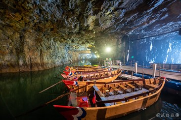
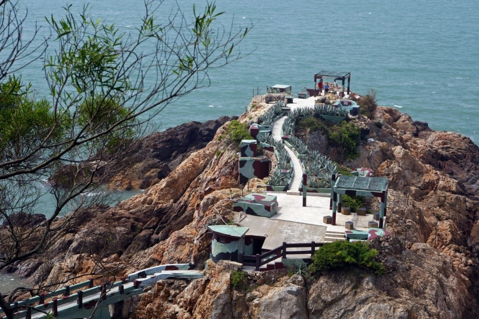
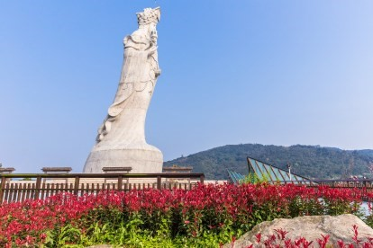
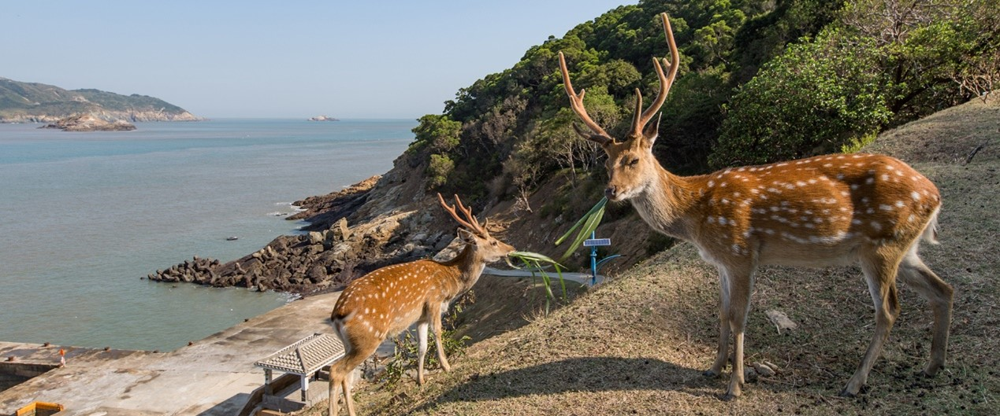
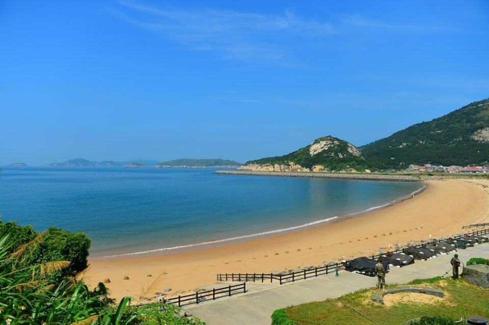

南竿

北海坑道
北海坑道
近年來，由於「藍眼淚」的發現，再加上據點坑道口少有光害，
南竿藍眼淚的追淚熱點之一就在北海坑道，
搭乘搖櫓船，慢慢搖入坑道內，
尋覓散發細微光芒的光暈，是值得一探的體驗。
更多內容

鐵堡
鐵堡
若是想要深度體驗馬祖戰地風情，鐵堡之旅不可少！鐵堡地形險要，
方便駐軍便於觀測海面動靜，早年曾被闢為軍事據點，
由精銳的兩棲蛙人部隊日夜戍守西側海岸線，
更因防禦工事需要，將岩礁內部鑿空，上面覆以水泥掩體，粉刷迷彩漆料，
並設置草綠色防護網架，
甚至在崖壁上插滿了防止水鬼摸哨、突擊的碎玻璃與鐵條，佇立於浪濤中。
更多資訊

媽祖巨神像
媽祖巨神像
位於四維村裡媽祖巨神像，腳下是一艘船造型，
從遠處望過來媽祖就像乘著船在海上航行，庇護著這塊土地。
近看站在媽祖腳下仰望，在藍天的映襯下，像發著聖光般更添美麗。
更多內容
津沙聚落
對比北竿名聲響亮的芹壁聚落，津沙聚落就是南竿最著名的閩東石厝群聚落，
這裡擁有最完整的古宅群，更是踏浪、欣賞夕陽美景的最佳去處，
在馬祖縣政府聚落重生計畫下，一棟棟頹圮老屋開始出現不一樣活力，
老酒館、特色民宿、美食餐廳如同雨後春筍般設立，
滿滿蕭瑟滄桑、古樸美感的津沙聚落，再次成為南竿受人矚目的魅力小鎮。
更多資訊
北竿
芹壁聚落
1960年代後，因人口外流，芹壁聚落僅僅只剩5戶人家幾乎成為空城，
但也因禍得福，這個馬祖景點成為唯一沒有現代建築入侵的聚落。
芹壁舊名「鏡港」，又稱「鏡澳」，
現在更為人所知的是「馬祖地中海」的稱號。
更多內容

大坵島
大坵島
大坵島位於北竿島北方，一座原來沒沒無聞的小島，
卻因為一群意外的嬌客－梅花鹿，
成了近十年來馬祖最熱門的觀光景點之一。
號稱媲美日本奈良的「大坵生態樂園」，
遊客一登上大坵碼頭，立刻被一群可愛可親的梅花鹿包圍。
往大坵島船班

塘后沙灘